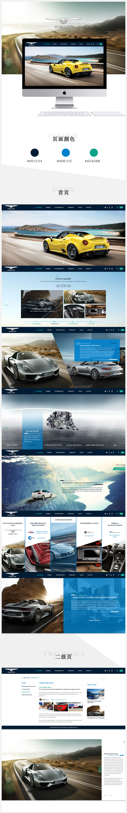

项目介绍
<泰克鲁斯官方网站建设>
网站设计
官方网站
欧美风格
泰克鲁斯官方网站，采用了欧美风格设计。本作品最令人祖母的是网站的交互设计。网站访问者可以通过许多交互功能，生动的体验泰克鲁斯的外观、
功能、以及人性化的独特之处。我们用更多的交互设计让访客来体验，也是为了突显这款车型的与众不同，您也可以试试选择不同颜色的图标，车型
随时变换的效果，现在来体验吧！


项目介绍
<泰克鲁斯官方网站建设>
网站设计
官方网站
欧美风格
泰克鲁斯官方网站，采用了欧美风格设计。本作品最令人祖母的是网站的交互设计。
网站访问者可以通过许多交互功能，生动的体验泰克鲁斯的外观、功能、以及人性化的独特之处。
我们用更多的交互设计让访客来体验，也是为了突显这款车型的与众不同，您也可以试试选择不同颜色的图标，车型随时变换的效果，现在来体验吧！